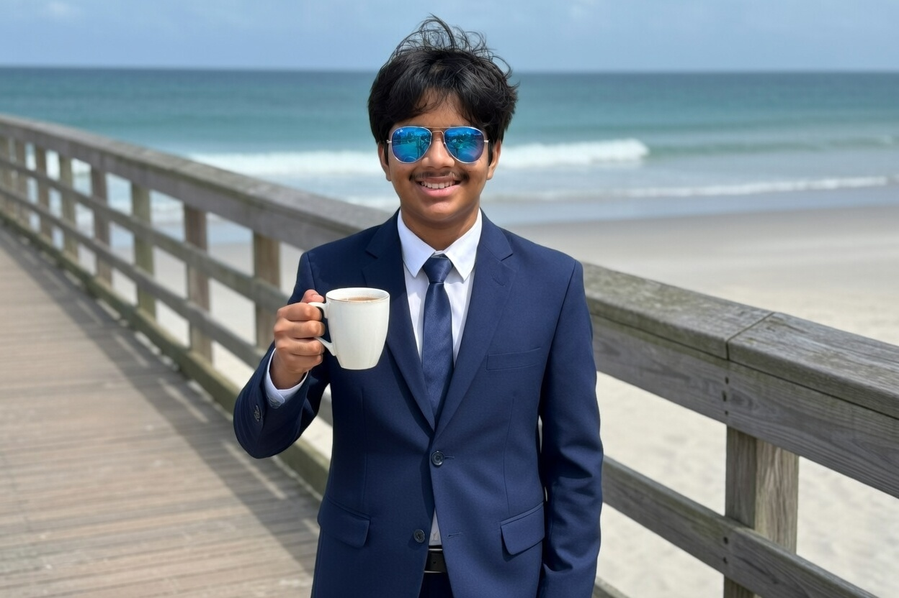

About Me
A little bit about who I am and what I do.

I'm on a mission to eventually lead a pioneering AI corporation as CEO. I've always been fascinated by how intelligent systems can tackle global challenges, and I want to be at the helm of the teams defining the next era of human-computer interaction. Right now, I'm building that foundation at Emerald High by balancing the technical side of things in our AI Club with the business and leadership strategies I'm diving into through DECA. To me, being a leader in tech isn't just about understanding the code. It is about knowing how to steer the ship.
My time outside of the classroom is really where I've learned to handle the real world. Winning a first-place trophy in Speech and Debate taught me how to take a complex, messy idea and turn it into a persuasive argument that actually clicks with people. At the same time, working as a certified referee has been a total masterclass in leadership under fire. Managing a high-speed game and making objective calls in high-pressure moments has taught me more about conflict resolution and staying cool than any textbook ever could.
I've also realized that the best leaders are the ones who focus on the people around them. Spending time as a volunteer tutor for middle schoolers has been a great lesson in adapting my communication style to help others reach their potential. Even my time on the badminton team plays a role because it keeps my energy up and reminds me that winning requires both physical stamina and a smart game plan. I'm a big believer that success comes from a mix of personal drive and the ability to empower your team. Thanks for stopping by, and I hope you enjoy exploring my vision for what is next in technology.